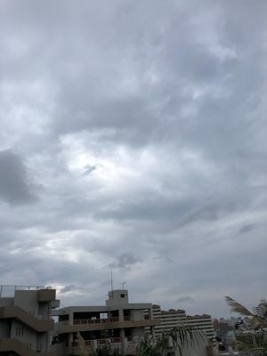

うるがいの話 ある日
最新: 騙（だま）される人【うるがいの話 ある日】とは 一日だけのプログです
『うるがいの話』の最新一日だけのプログで、通信料が少なく経済的だ。カニの画像をクリックすると全ての日付が載る『うるがいの話』サイトを表示します
|
|
【うるがいの話】 うるがい(ｳﾙｶﾞｲ urugai)とは、『もずくがに』の名前でとても大きくなります。 |
|---|---|
|
|
【カミマヤーの話】 猫のことを方言でマヤーといいます。カミマヤー（kamimayaa）とは、神の猫のことです。 |
|
【たながぁの音楽】 たながぁ（ﾀﾅｶﾞｰ tanagaa）とは手長えびのことで、何種類かあり大きいのは車 エビぐらいになります。 |

|
【ぶながぁの話】 ぶながぁ(ﾌﾞﾅｶﾞｰ bunagaa)とは、赤い髪の毛、赤い身体、そして身長は１ｍ２０ｃｍ ぐらい、川の蟹を食べているの目撃された。場所は沖縄県国頭郡大宜味村のと ある村僕の隣近所に住んでいる爺さんから、聞いた話です。 |
|
|
【ギーマの話】 ギーマ(giima)とは、山原の里山に咲くスズランに似た、 花を付けます。実は食べられます、 気が付くと口の周りが紫になっています。 |
2023年03月21日 (火）騙（だま）される人
15:42

『魔がさす瞬間 危ない自分の心理学 小田 晋／著』より
あなたも詐欺師のワナにはまる
「自分に限って、人に騙（だま）されることなどあり得ない．．．．．．」学
生は詐欺師の格好の餌食であるこの本の読者の中にも、学生時代に何十万円も
する英語教材を買わされたり、・・・・
→大学４年生の時、国際大学の近くにある妹達が住んで居るアパートに住所大
阪堂島の名刺を持った若い女性の英語教材の販売に見事にカモにされたワタ
クシ、支払いは分割で、英語教材は使わずダンボールに入ったまま、教材の
その後、引っ越す 度にダンボールに入ったまま、結局廃棄した。
→社会人一年目、京都長岡京市にある寮で購入した クラシックレコード
まだある！、頑張って利用したい
ある日、Ｉ子さんが家の近くを歩いていると、見た目に７０歳を過ぎたおじい
さんが「すみません」と声をかけてきました。小柄で人の良さそうなその老人
は、困った様子で「財布を落として困っています。 急用で自宅まで今すぐ帰
りたいので、電車賃を貸していただけないでしょうか．．．．．．」とＩ子さ
んにすがるような目線を送ってきました。Ｉ子さんが「でも．．．．．．．」
と躊躇（ちゅうちょ）すると、「もちろんすぐにお返しします。何とかお願い
できないでしょうか」と、本当に困った顔をする。Ｉ子さん自身急いでいたこ
ともあり、電車賃くらいなら、と財布の中から千円札を出し、老人に手渡しま
した。老人は、助かったという表情で、自分の連絡先を教え、Ｉ子さんも自宅
の電話番号だけを紙に書いて渡しました。老人と別れたあと、Ｉ子さんは久し
ぶりに人助けができて爽やかな気分になったといいます。しかし、数日たって
も老人から連絡がないため、教えてもらった連絡先に電話をしてみれば、それ
はデタラメであることがわかりました。結局泣き寝入りです。この手口は寸借
詐欺といって、同情を買うような巧みな言葉で人を騙し、いろいろな人から少
額ずつの金を借りるというものです。「数千円程度なら」の気のゆるみから、
意外と簡単に騙さ れてしまうケースが多いのです。
→おお、 国際通りの千円だ！
１５時３３分 ビットコインの総資産 ￥１０、６１０（↓１７２）